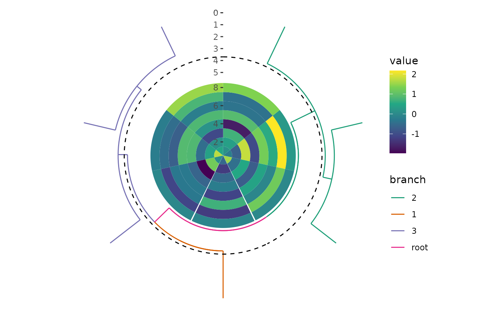
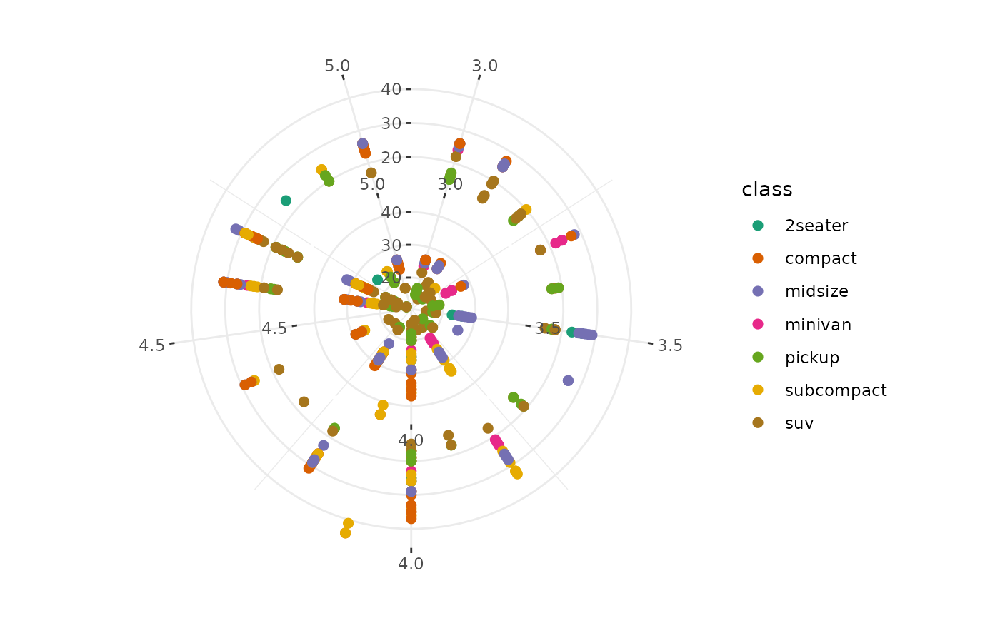

![[Experimental]](figures/lifecycle-experimental.svg)
This function integrates the functionalities of circle_discrete() and
circle_continuous() into a single interface.
Arguments
- data
Default dataset to use for the layout. If not specified, it must be supplied in each plot added to the layout:
If
limitsis not provided,fortify_matrix()will be used to get a matrix.If
limitsis specified,fortify_data_frame()will be used to get a data frame. Note that if the data is amatrix, it will be automatically converted to a long-formatted data frame, which differs fromggplot2's behavior.
- ...
Additional arguments passed to
fortify_data_frame().- limits
A
continuous_limits()object specifying the left/lower limit and the right/upper limit of the scale. Used to align the continuous axis.
Examples
set.seed(123)
small_mat <- matrix(rnorm(56), nrow = 7L)
# circle_discrete
circle_layout(matrix(rnorm(56), nrow = 7L)) +
ggalign() +
geom_tile(aes(y = .column_index, fill = value)) +
scale_fill_viridis_c() +
align_dendro(aes(color = branch), k = 3) +
circle_switch(coord_radial(inner.radius = 0.5))

# circle_continuous
circle_layout(mpg, limits = continuous_limits(c(3, 5))) +
ggalign(mapping = aes(displ, hwy, colour = class)) +
geom_point(size = 2) +
ggalign(mapping = aes(displ, hwy, colour = class)) +
geom_point(size = 2) &
scale_color_brewer(palette = "Dark2") &
theme_bw()
